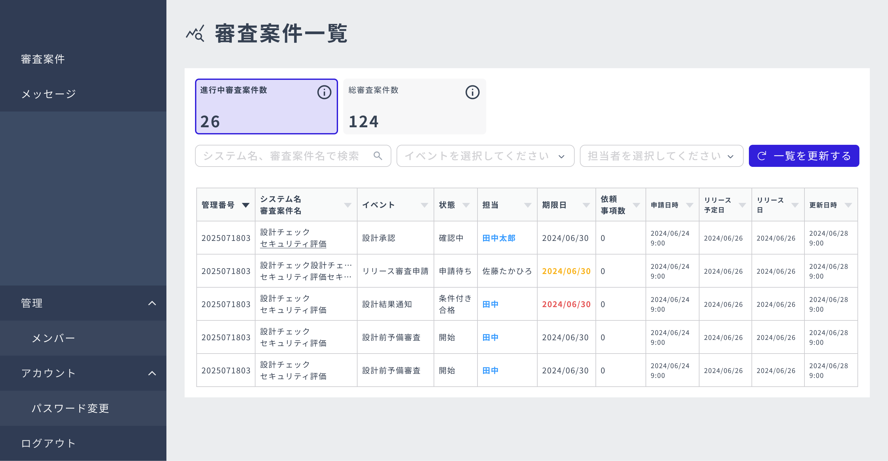
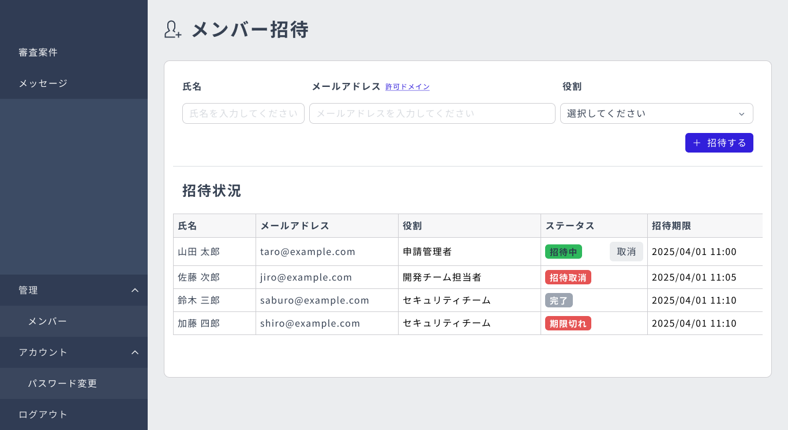
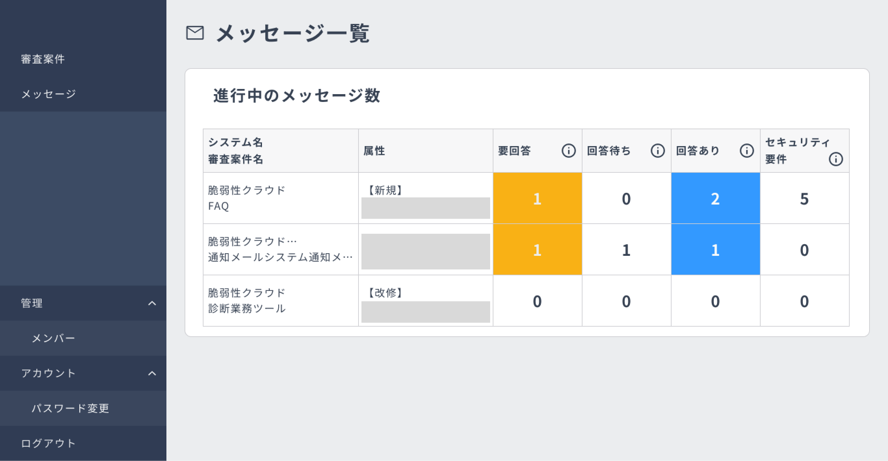
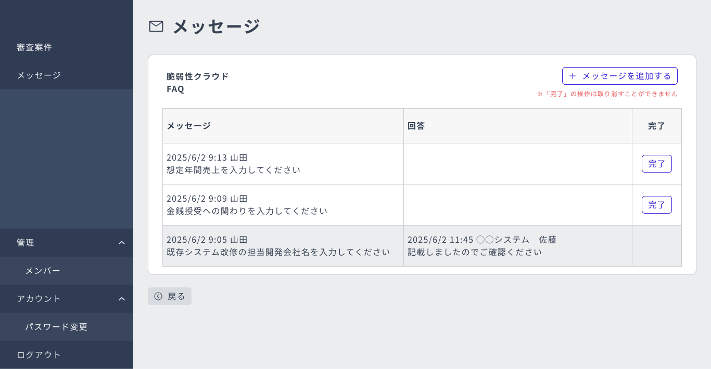

CASE STUDY — 03
セキュリティ審査・リリース業務を支援する社内システム。セキュリティ要件の設定や審査案件の管理、アカウント管理などの機能を持ち、デザインからフロントエンド実装、データ仕様の整備まで一貫して担当しました。

審査・レビュー業務は、セキュリティ要件の設定や審査案件の進行管理など扱う情報と状態が多く、業務を滞りなく進められる画面設計が求められました。
デザインだけでなくフロント実装・データ仕様にも関わることで、実装を見据えた現実的な設計にしました。
APPROACH
アカウント管理・メンバー招待／管理・パスワード登録・審査案件詳細などの画面をFigmaで設計。
セキュリティ要件設定・審査案件詳細画面などをVue.jsで実装し、マージリクエスト作成・レビュー対応を経てリリースまで対応。
エンティティ定義書とテーブルを突合・修正し、画面とデータの整合を担保。メール通知・確認モーダルなど、誤操作を防ぐUXも設計しました。

メンバー招待

メッセージ

進行中メッセージ ダッシュボード
エンジニアが不足する状況で、デザインとフロント実装をまとめて担当し、新機能の実装や既存機能の改修を2〜3営業日で完了できました。デザイン→フロント実装→データ仕様の整備まで一気通貫で関わったことで、実装の制約を踏まえた設計判断が速くなり、手戻りの少ない進め方を身につけました。